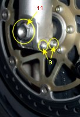
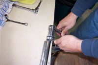
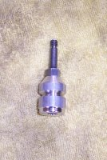

Fitting Aftermarket Forks Springs and Valve Kits
One of the major problems with Honda motorcycles is the suspension setup. For some reason, Honda puts very crappy suspension into their bikes. At the front end, for anything except their sport bikes you can assume that the springs are too light and the valving is heavily over damped - often to the point of it hydraulic locking on you. The only way to cure this problem is to fit aftermarket valve kits.
This tutorial is based around the Blackbird, but the same process can be used on most modern Honda bikes with right-way-up forks, such as the VFR, VTR and earlier CBRs (250, 400, 600, 900). To indicate the differences for these bikes, I've used some of my friend Chris Coote's photos of the work done on his (my-ex) VTR. The originals of these photos can also be found at Aus-VFR forum. The instructions can also be used anywhere that Showa forks are present, such as Aprilias and Suzukis, with some minor changes to the basic strategy.
Preparation Work
Springs
Unless you are the typical 60kg Japanese male, it is highly unlikely the stock springs will be suitable for you. Springs are rated in kg/mm - the number of kilograms it requires to compress the spring 1mm. For most riders, you'll be looking for numbers around 0.9kg/mm (about 70kg/160lb) to 1.05kg/mm (110kg/240lb). As an example, in the Blackbird I am running 0.95kg/mm for 85kg/190lb, while in the VTR I ran 0.9kg/mm.Springs come in different types that describe how they change as they compress. This is refered to as "rate" so you get single-rate, double-rate, progressive-rate etc. I always prefer single-rate springs, which is what most shops sell as aftermarket items. Single rate springs retain the same kg/mm value for the entire set of the spring's compression. You can tell this by looking at the spring - all the coils should be equi-distant apart.
For brands of spring, there are basically 2 available - Eibach and Ohlins. They are both manufactured in the same factory, just with different stickers put on them. There are many places that sell these springs online, just make sure you get ones which are roughly the right length. Note that when you get them and compare them to the stock springs, they will typically be a bit longer. So long as they are not longer that the standard spring + spacer, you'll be fine.
Sourcing the Valves
There are several different brands available, this tutorial can be quite generic for all of them, but the kit I always use is from a Kiwi company called SuspenionTech. You cannot buy these in the USA that I am aware of. You can either contact me directly to get some shipped in from Australia or talk directly with the aussie supplier I like to deal with - Nick Dole at Teknik Motorsports in Penrith, NSW, Australia.Alternate suppliers of different valve kits are
In general, I would recommend staying away from any kit that uses brass as the piston body. Inside the fork is a lot of very high pressure hydraulic action with the fluid passing through the valves. Because the fork is open to the air and moisture, this causes heavy cavitation around the edges of the valve surface. Cavitation basically means the creation of a lot of very small air bubbles. At the high pressure like inside the valves, those small bubbles turn into sand paper and wear out valves very quickly. Stick to valves that used hard-anodized Aluminium for best long-term wear characteristics.
Deciding on what to get is a matter of how much money you have available. At a minimum you get the compression kit, but I highly recommend doing both compression and rebound, for the best ride quality.
Holding the bike up
To perform this work you will need to take the forks out of the bike. That means you are going to need to support the bike in some way. If you have a center stand, sitting the bike on that and tying the rear to the ground is a good option. If you have a head-stem stand that is just as suitable too. Note that you cannot use a stand that lifts from the bottom of the forks! A final option, if you have stock headers on is to use a trolley jack placed under the headers to lift the front of the bike. Motorcycle headers are really strong, so it's not a problem.Tools Required
Nothing too out of the ordinary. Being a Japanese bike, everything is metric. A socket set with at least 10, 12,14 and 15mm sockets will be needed. In addition two large sockets to fit the axle nut (21mm) and fork caps (25mm) will be needed. Spanners will need both open-ended and ring at different times.
For the allen keys, I also highly recommend getting a set that you can fit to your ordinary socket set. The brake caliper bolts especially can be in really tight (and/or loctite) and you won't get enough leverage with just the typical angle set. The socket attachments will help break the thread easily.
A small plastic syringe and a length of silicone tubing is needed for setting the fork oil height. Small flat-bladed screwdrivers for various circlips and long-nose pliers. To measure the shims, you'll need a set of verniers that measure in thousands of millimetres, not inches.
You'll need a bucket or reasonable size tin can to drain the fork oil into (there's about a litre of oil between the two forks) as well as a large number of rags. Remember all of the forks are bathed in oil, which means there will be oil everywhere and you'll be continuously wiping your hands and the parts down during this whole procedure. You'll need a lot of them!
Word of Warning
You are about to play with the second most vital piece of equipment on the bike (brakes being the most vital). This comes with a lot of extra responsibilities. What I am going to show you is not technically difficult to do from a mechanical perspective - despite what various internet "gurus" will attempt to scare you into believing. However, what you are going to effect is the handling of the bike. Most kits don't allow you much room to move, but this kit I am going to show you how to fit gives you enough rope to not only choke yourself, but potentially seriously effect the handling of your motorcycle in a negative way. If you are a very experienced rider, you will be able to deal with these negative effects if you get the initial settings wrong, but for a rider with only a year or two's experience then you need to take extra caution. DO NOT just jump on the bike just after completing this and try out your local favourite twisties. Down that path lies death.No, I'm not kidding. On the first time I did my blackbird, I used the setup that I'd used on previous bikes. This lead to a situation where I had close to zero damping at all, which meant the slightest bump would start a severe pogoing effect on the front of the bike. Do that in the twisties when you weren't expecting it and you will loose front wheel traction and you and the bike will part company. So, at all stages, always double and triple-check your work for correctness. Also, make sure you have selected the correct setup from the tables provided. Being off by 1 is not going to be a problem - the bike might not handle quite like what you want, but 2 or more is a serious issue. The settings I talk about here are for me - a 85Kg rider that does mainly touring riding, with a small amount of very hard road riding thrown in.
Fitting
1. Calipers and Guard
{kind=link}
{kind=link}
{kind=link}
{kind=link}
Remove the brake calipers (1, 2, 4), and mudguard (3, same left and right). You'll need 4mm and 6mm allen keys, 10mm socket and a 5in extension.
To remove the calipers on the XX, you'll need to undo the LBS cylinders as well. On the right side (looking forward from the seating position) the two bolts (7) (are really hard to get to. If you look just above it, there is a square block that has some hard tubes running across to the other fork. On the back side of that, there's a 10mm head bolt (6). Undo that first and then push and hold the tubing towards the rear of the bike and use a 10mm socket & extension to remove the two remaining bolts.
The two calipers can dangle without any issues, just pull them off the rotors to make life easier for you to pull the wheel out.
2. Removing the Wheel
|  |
{kind=link}
{kind=link}
Next undo the axle. Firstly undo the pinch bolts (8, 9) on the bottom of each fork (12mm socket or ring spanner). Pull them all the way out.
To undo the axle, find a #2 phillips screwdriver and insert it through the hole on the left side (10). On the right (11), find a 24mm socket. Brace the screwdriver and crack the thread with the socket. Don't try to turn the screwdriver at this stage, just use it to stop the socket on the other end spinning. This may take a bit of force to crack the thread lock, so I recommend using a 1/2in drive socket set so you can get some decent leverage on it. Once the thread lock is broken, the nut should just spin off in your fingers.
To pull the axle out, just twist and pull on the screwdriver. Best to stick a block of wood or your foot under the wheel as you pull the axle out to make life easier.
3. Prepping the forks
{kind=link}
{kind=link}
{kind=link}
To remove the cartridge bolt, grab a long allen 6mm key and insert it up the end of the fork like in the picture above. You won't be able to see what you're doing, so you need to feel around for it to seat properly. Find a hammer and give the allen key a couple of sharp hits. Next, grab the axle and insert the appropriate end into the fork just enough to get a decent purchase. You won't be able to push it all the way through because the allen key is in the way. Next get an shifter and apply it to the bent section of the allen key as shown above. This will give you some leverage. Crack the thread on the bolt. This may require a couple of really sharp tugs because the stock bolt uses locktite as well as a copper washer, so it's in really tightly. Don't be surprised if this end up bending the allen key a bit. You'll need to put a bit of shoulder into it.
Once you've cracked the thread, pull the axle out and position a tin under the fork leg. Continue to pull the bolt out and get ready to reposition the tin - you're bound to have got it wrong in the first place! Let the fork drain of oil. To help remove as much oil as possible, after the bulk of it has drained out, pump the bottom of the fork leg up and down a good dozen times or more.
Once you have drained both forks, pull the forks out of the bike. There is a 6mm allen headed bolt at the top clamp and the bottom clamp has a single 14mm headed bolt (for the Blackbird, other bikes will have different numbers of bolts). Slide the forks down and out the front of the bike. Take them to your workbench area.
4. Disassembling the Forks
|  |
{kind=link}
{kind=link}
To pull the forks apart, you will need to remove the caps completely. Slide the fork legs in as much as possible. Put a socket onto the cap bolt and a 12mm open-ended spanner onto the nut just underneath the cap. Undo these. Try not to move the bottom nut - particularly if you are doing this on a bike that has rebound adjustment (the nut controls the amount of rebound adjustment in the fork and you want to keep it at exactly the same place on both forks). Spin the cap off.
Pull off the spacer, washer and spring. Watch for the washer(s) there is one betweent the spacer and spring, but there may be one C-shaped washer between the spacer and fork cap. Collect these and keep the order correct (the c-shaped washer also usually has a pressed in piece to it too, so remember which way up it goes).
Grab hold of the tube that is left. It should just come out in your hand with zero effort. If it doesn't put the bolt in the bottom of the fork again a bit, place the allen key back in it and give it a few light taps with a hammer until it comes loose, then pull the bolt back out and it should all fall apart on you. You should now have a long thin tube about 600mm long with a short fat piece with a few holes in it on the bottom. Take this over to your tin of old oil and give it a heap more pumps to remove any excess oil. Turn it over and pump the other end too. (the bit that came from the top of the fork). You'll be surprised how much oil comes out of it still. If you have the time, letting it drain for another 5-10minutes is worthwhile.
Clean everything up with a rag to remove as much oil as possible.
5. Setting up the new Springs
{kind=link}
As you can see from the above picture, the aftermarket spring (14) you are likely to have is going to be different length than the OEM spring (13). To compensate, you need to create a new spacer. Judging the right length of spacer is a bit of a black art, because the lenght of the spacer also creates some initial amount of preload on the spring too. When you have a fork like the XX that does not have a preload adjuster, then this is the only way to set the correct amount. As an initial setting, I normally just try to make the total length of fork + spacer to be the same as original setup. Cut the length of the new spacer so that they are identical length.
Choosing a spacer material is pretty simple. Some times the spring kits will include some spacer material, or you can just cut up the standard spacers. It really doesn't matter what you use in there so long as the outside diameter is about the same as the outside of the spring, and you have a washer between the spacer and spring (you've just pulled one out, so that shouldn't be an issue). My most favourite material is to use just a piece of PVC pipe. Plentiful, cheap and allows you a lot of room to experiement because it is so cheap. Really all the goal at this point is, is to make it approximately right. You don't need to be right on the first time around. All you need to have is the length to give you a measure on how you need to adjust it once you get the bike back together. If you only have a single piece of spacer material (say you're cutting up the standard spacers) then it's better to go longer and trim down, rather than too short.
Put these bits aside now. We have to head back to disassembling the valves.
5. Disassembling the Cartridges
|
|
{kind=link}
{kind=link}
{kind=link}
{kind=link}
Pulling the cartridge apart starts by taking the end cap of. Sometimes these are stuck on there and others they'll have fallen off as you take the damping rod out of the fork. If it hasn't come off, put a rag around the cap and using a set of multi-grips opened to the right size, twist a bit. They aren't threaded, so it should just take a small twist to pop them off.
{kind=link}
{kind=link}
{kind=link}
{kind=link}
The compression pistons will now be visible at the bottom of the fork. Either with a big-ish screwdriver or by inserting the bolt once again, give the piston a light tap to push it into the cartridge. This should just get it moving. Once moving it will move pretty freely. Push it in enough to expose the small circlip inside the cartridge. Using a small screwdriver or your fingernails, pop it out. Your pistons should now fall out the bottom of the cartridge when you up-end it. If they don't, grab the damping rod in one hand and the cartridge in the other and tap the compression piston out. Make sure you're doing this over a table or something so that when it pops out the end (sometimes it gets twisted a bit right at the end and stuck on the indent from the circlip) it doesn't fall all that far. Once out, the rebound rod should push through a reasonable distance.
{kind=link}
At this point, you now have the cartridge disassembled as much as you will need. The bullet-shaped piece (16) is the compression piston assembly and the piece on the rod (17) is the rebound. This is important to know for when you put the appropriate valve kit on, so as to not get them mixed up.
6. Replacing the Compression Valve
|  |
{kind=link}
{kind=link}
{kind=link}
Once the nut is all the way off, remove everything from the shaft. You don't need these any more and they can be thrown away. However, if you think you want to become a suspension fixer for your friends, keep the "washers" that are located between that nut you just removed and the big round metail thing with holes in it (that's the valve). They are the shims used to control the damping characteristics. The kit you've purchased has new shims included, so you don't need to keep them, but if you want to do further adjustments later on it's useful. If you don't want them, send them to me, I can always make use of more shims (they're horribly expensive to purchase as individual items!).
After everything is off the shaft, take a file to the end of the thread and clean up the mess made by removing the peening. You'll need a reasonably fine metal file for this job. Make sure the nut can go back on without too much hassle.
Now you have to do some thinking. You have to decide how you want your bike to handle. The ST valve kit comes with a table of different shim stacks in the instructions (if you don't have those, email mail me and I'll send them to you) that can be used. There's also a little chart with the modifiers from the base stack. Decide on the one that you want (I used C7). Find the pile of shims in the kit, grab your verniers to measure the correct shims. Lie the stack out on the table in the order that you need to assemble it in.
{kind=link}
{kind=link}
{kind=link}
{kind=link}
{kind=link}
7. Replacing the Rebound Valve
{kind=link}
{kind=link}
As for the compression valves, you need to decide on the shimstack to use. Like the compression valve, there's a set of tables and factors to work with. For me, I started with R6, but that seemed way too soft in road riding, so I've moved to R7 using a single wave washer. Measure and lay out the appropriate shims.
|
|
{kind=link}
{kind=link}
Place the check washer on next - it will have the same dimensions as the compression version. Follow it with the valve. This time you have to be careful because the valve must go on a certain way. Look at the center of the valve and in particular for a little recessed area. The recessed section must point towards the bits you've already assembled on the rod.
Holding the valve against the spring pressure with your hand, assemble the shimstack - this time starting with the biggest diameter shim and working to the smallest. Place on the spacer and finally the nut. The nut should be on tight enough that you get about 3-4mm of travel of the piston against the spring/washer. If you have the coil spring, the replacement nylock nut will not work, so you need to re-use the old nut and peen the end of the rod over again to make sure the nut won't come loose. If you used the wave washer, the nylock nut works just fine and you can tighten it right down against the other parts.

|
{kind=link}
You are now complete the installation process. All you need to do is re-assemble everything in the opposite order to the way you pulled it apart.
8. Reassembly
{kind=link}
{kind=link}
{kind=link}
Next grab the cap for the cartridge and lightly tap it into place. Depending on how it came off, it may not want to stay. No matter, when assembling the forks, just hold the whole fork upside down and insert the cartridge from the bottom. Compress the fork slider all the way. The damper rod won't stick out the top, but will be fairly close. If the top of the rod is sticking out over the end of the compressed fork, you haven't located it all the way in the fork yet. With the fork slightly upside down, keep attempting to push the damping assembly in until you feel it seat home in the recess in the bottom of the fork. This can sometimes be a frustrating exercise as the metal cap likes to come off, or just be a pain - hence the reason to do it all with the fork upside down.
Once you feel the damper assembly seat home grab the bolt that held the assembly in place, and the copper check washer and insert those in the hole in the bottom of the fork. Remember to do this up nice and snug as this is what holds the bottom part of the suspension in the fork, and, stops the fork oil exiting out the bottom of the fork. You won't be able to overtighten it, as the bottom section of the damper you can't grab with anything like pliers to hold it down. Tightening it up relies solely on friction. Some like to put some loctite on the bolt before assembling it. I never had not had any problems with the bolt coming undone.
Now you have the final reassembly to go through. Before putting the spring and cap back on, put the forks back into the bike. Don't put them in too tightly, and don't bother to put the axle or wheel in. The next stage is setting up the fork oil levels and should be done on the bike.
With the forks temporarily installed in the bike, extend the forks to the maximum extent and drop the new spring in, but not the spacers or anything else. Make sure that when you compress the forks again that the springs aren't popping out the top, which is a good indicator you've messed something up down the bottom. Open up your bottle of fork oil and pour half of it in one fork and half in the other. Most bikes seem to take about 500ml of oil per fork, typically just a bit under, so this will get you set up with the basics. Place a rag around the top of the forks and over the tank. Make it pretty think layer as this next section is very likely to spill a bit of oil if you're not really careful. In pouring the oil in the top, we've filled some of the dampers with oil, but there are still lots of places with air in it down the bottom of the fork. We need to remove that. With a set of long nosed pliers, grab the damping rod and slowly pull it up and down through it's free range of movement. Initially you'll feel it be really light and you might end up banging it up against the top stop. No worries, that's just a heap of air in the system. Continue to pump the damping rod up and down until you get a smooth resistance along the entire length of travel. As the air works it's way out of the system you'll feel it be tight in some spots, really loose in others. You know all the air is out when you get a consistent feel of slight resistance through the entire length of travel and you shouldn't hear any bubbling noises coming from down in the forks.
A word of warning if you are working on a bike that has the rebound adjuster in the top of the fork - the oil is going to come up through the top of the damping rod as you compress it (ie the bit you're holding onto with the pliers). Whatever you do, don't just try to ram the damping rod up and down really quickly as that is the surest way to end up with a face full of oil! I kid you not when I say that the oil can easily shoot a metre or too upwards if you push it in too fast. Very slow and steady is the way to go.
Next task is to get the fork oil heights set. The easiest way to do this is with a carefully calibrated syringe. Find a small syringe (I recommend something around the 10ml volume in size) and fit a small piece of silicone tubing to the end of it. With a ruler that is placed on the bottom of the syringe, cut the length of the tubing to the desired length. Typically this is either 110mm or 120mm. I personally like to run 110mm as it just adds a touch more stiffness near the extremes of travel, but not everyone likes the feel.
Compress the fork you're about to work on and hold it there. If you are by yourself, a block of wood or something similar under the end works well. I normally keep the springs still in the fork, though others recommend taking them out for this next step. If you take them out, then add 20mm to the length of tubing. Most manufacturers recommend around 140mm air gap with forks compressed with no spring. I run about 120mm with the spring in. Either way, the basic process is the same from here on, just the measurement differs. Place the syringe into the fork, resting the flat base of the rim of the fork slider tube. Place it on the lower side of the tube too (ie the side closest to the tank and seat). Draw out oil using the syringe in this fashion until all you end up sucking is air. If the syringe sucks air immediately, you're too low. move to the other fork first as it has too much oil in it. If you draw oil from the first fork, just empty the syringe's contents into the other fork as it is likely to not have enough oil in it. Keep drawing oil until you start to suck air. This will now have correctly set your oil height in the first fork. Move to the other fork and repeat the process, but this time emptying any removed oil back into the bottle and not the other fork.
You're now completed the majority of the work. Place the spacers into the fork and the washers either end of it. Reach in with a set of pliers and grab the damping rod and do that back up to the fork cap. Don't forget to tighten up the lock nut on the bottom of the cap (speaking from err.... experience!) Finally, push the caps into the forks and do them up. You may need to apply a bit of pressure to do this, but it should not be too much. If you do, the easiest way to do it is make sure you have a big socket that fits over the rebound cap and just lean into it a bit. Remember that you have the bike on a stand and being too vicious at this point could cause the bike to fall over, so be a bit careful. No He-Man antics at this point. Note that when you initially screw the caps onto the damper rods, extend the forks to the full lenght of travel, the caps should just lightly be touching the end of the fork tubes. If there is a lot of tension your spacer is not long enough, or if there is any more than about 10mm of gap between the bottom of the cap and top of the fork tube your spacers are probably too long. Looking at this another way - you've either got the wrong length or weight springs if you're a long way out of this situation.
Finally we need to reassemble the front end. First step is to tigthen up the top triple-clamp bolts only. Do not do anything else up other than finger tight. Next insert the wheel, axle and brakes - Again just tightening up a fraction more than finger-tight on the axle pinch bolts. This is important because the next few steps make sure that we don't accidently introduce some twist into the forks resulting in a lot of extra friction in the system.
Let the bike down off the stands. Grabbing the front brake, roll the bike forward a fraction and pull a big handful of brakes. Then bounce the bike up and down on the front suspension 5 or 6 times. Put the bike back on the side stand. Head back to the front and do up the lower triple-clamp bolts to their proper torque settings. Repeat the bouncing process again and then do up the axle and pinchbolts all the way.
That's it! You now have replaced the springs and tweaked the suspension of your motorcycle. See, not too hard was it! Now, go ride and enjoy. You may find that your initial settings are not quite right. First work with whatever adjustments you have available to you in the forks. If that fails, you know how to pull the forks apart and start playing with oil weights and the shim stacks. But, more on that in a future article.